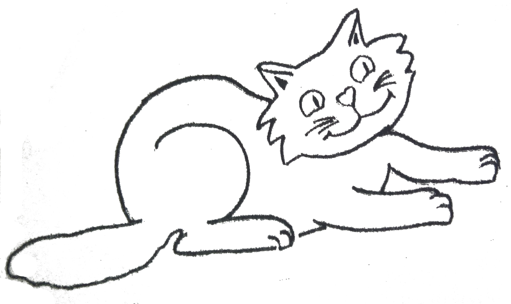

Metodologia dels Joves Castors
Els animals del bosc

Keeo, el savi castor és el líder de la colònia de castors.

Ras, el gat ensenya als castors a ser nets i endreçats.

Salky, l'hàbil ocellet sempre juga juntament amb la resta d'amics del bosc.

Baru, la xicoteta formigueta sempre és treballadora i arreplega despres de jugar.

Rebru, l'os ensenya a la colònia de castors els misteris i la importància de la naturalesa.
Llei de la Colònia
Un castor es alegre y juga amb tots
Lema del Jove Castor
COMPARTIR
Oració del Jove Castor
Senyor, al començar esta jornada ens invites a participar, fes que la nostra tasca siga útil per a tots per a que sapiguem construir un mon que t'agrade.
Image secció